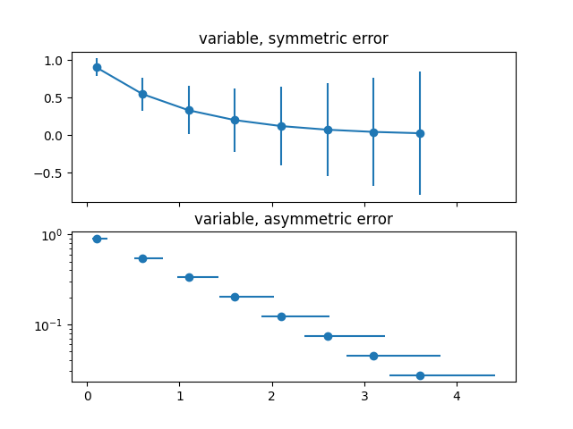

Note
Click here to download the full example code
12.3.1.11. Errorbar¶
Demo of errorbar function with different ways of specifying error bars.
Errors can be specified as a constant value (as shown in errorbar_demo.py),
or as demonstrated in this example, they can be specified by an N x 1 or 2 x N,
where N is the number of data points.
- N x 1:
Error varies for each point, but the error values are symmetric (i.e. the lower and upper values are equal).
- 2 x N:
Error varies for each point, and the lower and upper limits (in that order) are different (asymmetric case)
In addition, this example demonstrates how to use log scale with errorbar.
import numpy as np
import matplotlib.pyplot as plt
# example data
x = np.arange(0.1, 4, 0.5)
y = np.exp(-x)
# example error bar values that vary with x-position
error = 0.1 + 0.2 * x
# error bar values w/ different -/+ errors
lower_error = 0.4 * error
upper_error = error
asymmetric_error = [lower_error, upper_error]
fig, (ax0, ax1) = plt.subplots(nrows=2, sharex=True)
ax0.errorbar(x, y, yerr=error, fmt="-o")
ax0.set_title("variable, symmetric error")
ax1.errorbar(x, y, xerr=asymmetric_error, fmt="o")
ax1.set_title("variable, asymmetric error")
ax1.set_yscale("log")
plt.show()
Total running time of the script: ( 0 minutes 0.204 seconds)